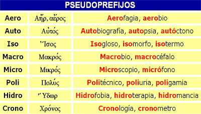
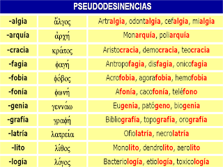

los pseudoprefijos son aquellas palabras que tienen un significado completo por si misma, pero que a veces se unen al inicio de otra palabra para formar nuevas palabras.

las pseudodesinencias son palabras que tienen significado po si mismas, pero que en ocaciones funcionan como complemento de otra palabra; se coloca al final de otra palabra para componer un nuevo vocablo.
